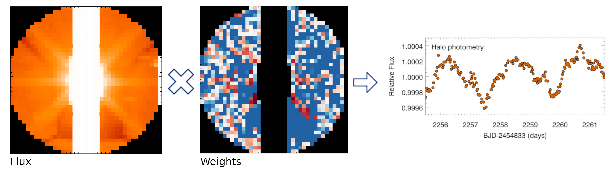

I have developed the following Python packages to address the various difficulties encountered when processing Kepler and TESS data of particularly bright stars. Please feel free to use and modify this code under a GPL v3 license.
Bright stars saturate the TESS cameras, resulting in excess charge bleeding along CCD columns. For particularly bright stars, and those high in the science frame and/or the upper buffer rows, this excess charge can bleed into the upper serial register and result in an overestimated smear correction. This not only renders data for these stars unusable, but also for any star that appears in the same CCD column. This code, mundey, recalibrates TESS target pixel files, including a new smear correction, calculated from the target pixel file itself, that circumvents this problem.
Saturation is not, by itself, a barrier to performing precise photometry. The saturation process is largely conservative, with the excess charge simply spilling into the adjacent pixels. Simple aperture photometry will therefore still work, provided the aperture includes the bleed column. Problems arise, however, when the star gets too bright, and the bleed column gets longer. Longer bleed columns necessitate saving data from a larger number of pixels. On a space telescope with limited data storage and telemetry, observing a single bright star comes at the cost of observing many more fainter stars. Additionally, the saturation may bleed off the edge of a CCD, and then it is no longer possible to capture all the flux. To overcome this, we have developed the halo photometry method, that seeks to recover stellar signals using a limited number of unsaturated pixels that surround the star in a halo of diffracted, reflected, and scattered light. This package implements this method, with the contribution from each pixel weighted to minimise the total variation in the resultant light curve and thereby minimise instrumental signals.
Occassionally, light curves provided by the TESS Science Processing Operations Center (SPOC) contain significant scatter, particularly during periods of less stable spacecraft pointing. Often the light curve quality can be significantly improved by picking a different, generally larger, aperture. The purpose of this code is to generate improved light curves when this situation occurs, primarily using methods from the lightkurve package. It first generates a new aperture mask, then calculates a new light curve from simple aperture photometry over this mask. Finally, it removes some instrumental noise using linear regression.
The backgrounds calcluated by the SPOC pipeline have a constant value across a TESS target pixel file at each cadence. While this works well for fainter stars, there can be significant gradients in the background across the large target pixel files of bright stars. This is particularly the case when there are significant Earth- and Moon-shine events during which the background changes rapidly. An example of the impact of this is the transit-like signal found in the light curve of the nearby star τ Ceti by Nora Eisner and collaborators. Additionally, backgrounds around bright stars tend to be contaminated by flux from these stars. This code calculates new backgrounds fluxes that takes into account gradients across the image, and are based on pixels further away from bright stars to minimise the impacts of these effects.
A recent CV can be found here.
An ADS library of my publications can be found here.
Last updated: